종자기사 (2016-08-21 기출문제)
1과목: 종자생산학
1. 다음 중 ( )에 알맞은 내용은?
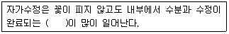
- 폐화수정
- 자예선숙
- 이형예현상
- 웅예선숙
(정답률: 90%)

2. 다음 중 타가수정을 원칙으로 하지만 자가수정을 시키면 낮은 교잡률과 종류에 따라 자가열세를 보이는 작물은?
- 완두
- 강낭콩
- 호박
- 상추
(정답률: 65%)
3. 식물체가 어느 정도 커진 뒤에나 저온에 감응하여 추대되는 식물은?
- 배추
- 양배추
- 무
- 순무
(정답률: 65%)
4. 다음에서 설명하는 것은?
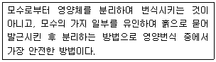
- 접목
- 꺾꽂이
- 분주
- 취목
(정답률: 77%)
5. 다음 중 (가), (나)에 알맞은 내용은?
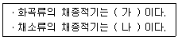
- 가 : 황숙기, 나 : 황숙기
- 가 : 황숙기, 나 : 갈숙기
- 가 : 갈숙기, 나 : 황숙기
- 가 : 갈숙기, 나 : 갈숙기
(정답률: 88%)
6. 다음 중 ( )에 알맞은 내용은?
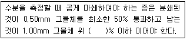
- 10
- 12
- 14
- 18
(정답률: 76%)
7. 다음 중 식물학상 과실을 이용할 때 과실이 내과피에 싸여 있지 않은 것은?
- 복숭아
- 자두
- 앵두
- 당근
(정답률: 88%)
8. 다음 중 안전저장을 위한 종자의 최대 수분함량이 4.5%인 작물은?
- 벼
- 고추
- 귀리
- 옥수수
(정답률: 71%)
9. 다음 중 ( )에 알맞은 내용은?
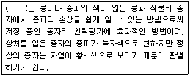
- indoxyl acetate 법
- ferric chloride 법
- malachite 법
- selenite 법
(정답률: 58%)
10. 종자의 생리적 성숙기로써 종자가 질적으로 최고의 상태에 달하는 시기는?
- 주병이 퇴화되고 종자가 모 식물에서 분리되는 시기
- 종자가 완전히 성숙하여 건조되고 저장상태에 들어간 시기
- 세포분열이 일어나 배의 생장이 80% 정도 이루어지는 시기
- 배주조직의 괴사가 진행되면서 탈수기간이 이루어지는 시기
(정답률: 54%)
11. 다음 중 (가)에 알맞은 내용은?
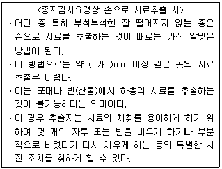
- 100
- 200
- 300
- 400
(정답률: 61%)
12. 다음 중 (가), (나)애 알맞은 내용은?
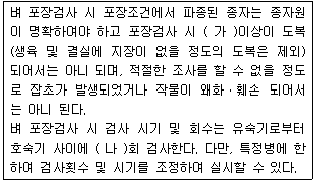
- 가 : 1/6, 나 : 4
- 가 : 1/5, 나 : 3
- 가 : 1/4, 나 : 2
- 가 : 1/3, 나 : 1
(정답률: 82%)
13. 다음 중 “성숙한 자방이 꽃이 아닌 다른 식물부위나 변형된 포엽에 붙어 있는 것”에 해당하는 용어는?
- 복과
- 취과
- 단과
- 위과
(정답률: 75%)
14. 다음 중 (가), (나)에 알맞은 내용은?
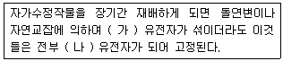
- 가 : 호모, 나 : 헤테로
- 가 : 헤테로, 나 : 호모
- 가 : 비대립, 나 : 헤테로
- 가 : 대립, 나 : 헤테로
(정답률: 79%)
15. 다음 중 배후면의 경우 저온습윤처리의 방법으로 휴면이 타파되었을 때 종자 내의 변화로 틀린 것은?
- 불용성 물질이 분해되어 가용성 물질로 변화됨으로써 삼투압이 낮아져 배의 물질이동이 쉬어진다.
- lipase의 효소활력이 증가한다.
- peroxidase의 효소활력이 증가한다.
- 새로운 조직의 형성에 많이 쓰이는 당류, 아미노산 등과 같은 간단한 유기 물질이 나타난다.
(정답률: 59%)
16. Soueges와 Johansen의 배의 발생법칙 중 “필요이상의 세포는 만들어지지 않는다”는 내용에 해당하는 법칙은?
- 기원의 법칙
- 수의 법칙
- 절약의 법칙
- 목적지불변의 법칙
(정답률: 82%)
17. 다음 중 모본의 염색체가 많고 부본의 염색체가 적을 때 수정이 잘 되는 경우의 작물은?
- 밀
- 귀리
- 해바라기
- 토마토
(정답률: 55%)
18. 다음 중 파종 시 복토깊이가 0.5~1.0cm에 해당하지 않는 작물은?
- 순무
- 가지
- 오이
- 생강
(정답률: 80%)
19. 다음 중 일반적으로 교배에 앞서 제웅이 필요 없는 작물은?
- 오이
- 수수
- 토마토
- 가지
(정답률: 61%)
20. 다음 중 종자증식체계에서 육종가(육성자)의 감독 아래 전문가가 증식한 것은?
- 기본식물
- 원원종
- 원종
- 보급종
(정답률: 64%)
2과목: 식물육종학
21. 약배양 하여 얻은 반수체 식물을 2배체로 만드는데 염색체 배가를 위하여 주로 사용하는 약제는?
- 콜히친
- 에틸렌
- NAA
- EMS
(정답률: 87%)
22. 집단 육종법에 관한 설명 중 옳지 않는 것은?
- F6 이후는 잡종강세 개체를 선발할 위험이 적다.
- 실용적으로 고정되었을 후기 세대에서 선발한다.
- 대부분의 개체가 고정될 때까지 선발하지 않는다.
- 질적 형질을 선발할 때에 주로 이용된다.
(정답률: 68%)
23. 후대 검정의 설명으로 가장 관련이 없는 것은?
- 선발된 우량형이 유전적인 변이인가를 알아본다.
- 표현형에 의하여 감별된 우량형을 검정한다.
- 선발된 개체가 방황 변이인가를 알아본다.
- 질적 형질의 유전적 변이 감별에 주로 이용된다.
(정답률: 46%)
24. 3원 교잡의 개념을 표현한 것으로 옳은 것은?
- (A×B)×C
- (A×B)×(C×D)
- A×B×C×D×E
- [(A×B)×(C×D)]×E
(정답률: 81%)
25. 다음 중 자웅이주인 것은?
- 시금치
- 강낭콩
- 완두
- 상추
(정답률: 80%)
26. 여교배를 한번 한 BC1F1세대에서 반복친의 유전자 출현 비율은 얼마인가?
- 25%
- 50%
- 75%
- 87.5%
(정답률: 67%)
27. 타식성 작물의 화기(花器) 구조의 특성과 가장 관계가 먼 것은?
- 웅예선숙
- 폐화수분
- 자예선숙
- 이형예현상
(정답률: 83%)
28. 76개의 Purine염기와 36개의 Thymine을 포함하는 2중 나선 DNA 절편에는 몇 개의 Cytosine이 포함되어 있는가?
- 36개
- 40개
- 76개
- 112개
(정답률: 57%)
29. 작물육종에 있어서 새로운 유용 유전자를 탐색 수집하여 활용하고자 할 때 가장 관계 되는 학설은?
- 순계설
- 게놈설
- 유전자 중심설
- 돌연변이설
(정답률: 62%)
30. 우리나라에서 주요 식량작물의 종자 증식체계의 단계로 옳은 것은?
- 원원종포→기본식물포→원종포→채종포
- 기본식물포→원원종포→원종포→채종포
- 원원종포→원종포→채종포→기본식물포
- 원원종포→원종포→기본식물포→채종포
(정답률: 85%)
31. 1대 잡종에 의한 육종을 설명한 것 중 옳지 않은 것은?
- 단위 면적당 재배에 소요되는 종자량이 적은 것이 유리하다.
- 잡종강세현상을 F5, F6 대에도 계속 이용한다.
- 한 번의 교잡으로 많은 종자를 생산할 수 있어야 한다.
- 잡종강세 식물은 개화기와 성숙기가 촉진될 수 있다.
(정답률: 57%)
32. 유전력과 선발에 대한 설명으로 가장 옳은 것은?
- 유전력이 크면 초기세대의 선발이 효과적이다.
- 유전력과 선발효과와는 무관하다.
- 유전력은 유전분산 중 표현형분산이 차지하는 비율이다.
- 유전력은 환경분산이 커짐에 따라 증가한다.
(정답률: 75%)
33. 감자 등과 같은 영양번식성 작물이 바이러스병에 의해 퇴화되는 것을 방지하는 방법은?
- 추파성 소거
- 고랭지 채종
- 조기재배
- 기계적 혼입 방지
(정답률: 80%)
34. 논 10m2에서 생산된 재래종 “가”의 수확기 지상부 전체 건물중은 40kg이었고 쌀의 생산량은 18kg 이었다. 이품종의 수확지수는 얼마인가?
- 0.45
- 2.2
- 58
- 720
(정답률: 59%)
35. 단위생식(Apomixis)을 가장 옳게 표현한 것은?
- 씨 없는 수박은 이 원리를 이용한 것이다.
- 수분이 되지 않았는데 과실이 비대하는 현상이다.
- 근친교배에서 많이 일어나는 일종의 퇴화현상이다.
- 수정이 되지 않고도 종자가 생기는 현상이다.
(정답률: 74%)
36. 한 쌍의 대립유전자가 이형접합상태인 식물을 N회 자식 시켰을 때 집단 내 이형접합자의 비율은?
- [1-(1/2)n]
- [1-(1/2n)]
- (1/2n)
- [(1/2)n-1]
(정답률: 59%)
37. 식물육종의 핵심기술에 해당하는 것으로만 나열된 것은?
- 우수한 유전자형의 선발, 종자프라이밍 처리
- 종자프라이밍 처리, 유전자운반체 개발
- 유전자운반체 개발, 유전변이의 작성
- 유전변이의 작성, 우수한 유전자형의 선발
(정답률: 75%)
38. 사료작물에 이용되는 합성품종의 장점은?
- 유전구성이 단순하다.
- 열성유전자가 발현한다.
- 소수의 우량계통을 사용한다.
- 환경변화에 대한 안전성이 높다.
(정답률: 71%)
39. 다음 중 유전적 원인에 의한 변이가 아니 것은?
- 불연속변이
- 대립변이
- 환경변이
- 연속변이
(정답률: 82%)
40. 형태적 형질 중 제1차적 특성에서 질적형질에 관여하는 요인으로 옳은 것은?
- 식미
- 저장성
- 다수성
- 종피색
(정답률: 79%)
3과목: 재배원론
41. 작물 유전의 돌연변이설을 주장한 사람은?
- De Vries
- Mendel
- 우장춘
- Darwin
(정답률: 70%)
42. 식물호르몬인 사이토카이닌의 주 생리작용은?
- 세포의 길이 신장
- 세포분열 촉진
- 발근 및 개화 촉진
- 과실의 후숙 촉진
(정답률: 59%)
43. 다음에서 설명하는 것은?
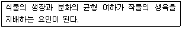
- Crop Growth Rate
- Carbohydrate Nitrogen Ratio
- Top Root Ratio
- Growth Differentiation Balance
(정답률: 71%)
44. 풍해의 기계적 장해에 해당하는 것은?
- 벼에서 수분 및 수정이 저해되어 불임립이 발생한다.
- 상처가 나면 호흡이 증대되어 체내의 양분 소모가 증대된다.
- 증산이 커져서 식물이 건조해진다.
- 기공이 닫혀 광합성이 감퇴한다.
(정답률: 35%)
45. 다음 중 원산지가 한국으로 추정되는 작물로만 나열된 것은?
- 콩, 포도
- 인삼, 감
- 생강, 토란
- 벼, 동부
(정답률: 78%)
46. 저장 환경조건을 가장 바르게 설명한 것은?
- 곡류는 저장습도가 낮을수록 좋지만 과실이나 영양체는 저장 습도가 낮은 것이 좋지 않다.
- 굴저장하는 고구마는 밀폐하는 것이 통기가 되는 것보다 좋다.
- 고구마는 예냉이 필요하지만 과일은 예냉하면 저장 중 부패가 많다.
- 식용감자는 온도가 12~15℃, 습도가 70~85%가 최적의 저장 조건이다.
(정답률: 50%)
47. 작물의 내동성에 관여하는 생리적 요인으로 옳은 것은?
- 원형질의 수분투과성이 작은 것이 세포내 결빙을 적게 하여 내동성을 증대시킨다.
- 세포내 수분함량이 높아서 자유수가 많아지면 내동성이 증대된다.
- 세포내 전분함량이 많으면 내동성이 증대된다.
- 원형질의 친수성콜로이드가 많으면 내동성이 증대된다.
(정답률: 48%)
48. 버널리제이션에 대하여 옳게 설명한 것은?
- 산소의 공급은 절대로 필요하다.
- 최아종자의 저온처리에는 암흑상태가 꼭 필요하다.
- 추파맥류는 고온처리를 해야 화성유도의 효과가 크다.
- 춘화처리 중에 건조시키면 효과가 상승한다.
(정답률: 55%)
49. 재배기간 동안 상토의 pH에 영향을 주는 주요 요인이 아닌 것은?
- 상토와 상토 구성분 자체에 포함괸 석회석과 같은 식재
- 관개수의 알칼리도
- 재배기간 동안 사용된 비료의 산도/염기도
- 재배기간 동안의 평균 기온
(정답률: 78%)
50. 지베렐린에 대하여 옳게 설명한 것은?
- 제초제로 이용된다.
- 벼의 키다리병에서 유래한 물질이다.
- 지베렐린의 주요 합성물질은 NAA이다.
- 사과의 낙과방지에 특히 효과적이다.
(정답률: 67%)
51. 농경의 발상지를 비옥한 해안지대라고 추정한 사람은?
- De Candolle
- G. Allen
- Vavilov
- P. Dettweiler
(정답률: 51%)
52. 인공상토의 기능으로 거리가 먼 것은?
- 농약사용 및 비료시용 빈도를 줄인다.
- 작물이 필요할 때 흡수 이용할 수 있는 물을 보유한다.
- 뿌리와 배지 상부 공기와의 가스 교환이 이루어지도록 한다.
- 작물을 지탱하는 기능을 한다.
(정답률: 58%)
53. 다음 중 식물의 광합성에 가장 효과적인 광은?
- 주황색
- 황색
- 녹색
- 적색
(정답률: 74%)
54. 다음 중 2년생 작물로만 구성되어 있는 것은?
- 가을보리, 아스파라거스
- 가을밀, 사탕수수
- 옥수수, 호프
- 무, 사탕무
(정답률: 54%)
55. 결핍증상이 어린잎에 먼저 나타나는 무기원소로만 나열된 것은?
- 마그네슘, 칼슘
- 질소, 철
- 마그네슘, 망간
- 황, 붕소
(정답률: 48%)
56. 과실의 성숙을 촉진하는 주요 합성 식물생장 조절제는?
- IAA
- ABA
- 페놀
- 에세폰
(정답률: 60%)
57. 다음 중 (가), (나)에 알맞은 내용은?
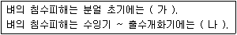
- 가 : 작다, 나 : 작아진다
- 가 : 작다, 나 : 커진다
- 가 : 크다, 나 : 작아진다
- 가 : 크다, 나 : 커진다
(정답률: 75%)
58. 작물생장속도를 구하는 공식으로 옳은 것은?
- 엽면적 × 순동화율
- 엽면적율 × 상대생장율
- 엽면적지수 × 순동화율
- 비엽면적 × 상대생장율
(정답률: 66%)
59. 파이토크롬(phytochrome)의 설명으로 틀린 것은?
- 광흡수색소로써 일장효과에 관여한다.
- Pr은 호광성종자의 발아를 억제한다.
- 파이토크롬은 적색광과 근적외광을 가역적으로 흡수할 수 있다.
- 굴광현상을 나타내는 호르몬의 일종으로 식물생육에 필수적인 물질이다.
(정답률: 58%)
60. 용도에 의한 작물의 분류에서 잡곡에 해당하지 않는 것은?
- 조
- 기장
- 귀리
- 옥수수
(정답률: 61%)
4과목: 식물보호학
61. 벼물바구미에 대한 설명으로 옳은 것은?
- 노린재목에 속한다.
- 번데기로 월동한다.
- 유충은 뿌리를 갉아 먹는다.
- 벼의 잎 뒷면에서 번데기가 된다.
(정답률: 64%)
62. 농약 살포액의 성질에 대한 설명으로 옳지 않은 것은?
- 침투성 : 식물체나 해충체 내에 스며드는 것
- 습전성 : 작물 또는 해충의 표면을 잘 적시고 퍼지는 것
- 수화성 : 현탁액 고체입자가 균일하게 분산 부유하는 것
- 유화성 : 유제를 물에 가한 경우 입자가 균일하게 분산하여 유탁액이 되는 것
(정답률: 63%)
63. 완전변태를 하는 곤충 목은?
- 노린재목
- 메뚜기목
- 잠자리목
- 딱정벌레목
(정답률: 66%)
64. 보르도액은 어떤 종류의 약제인가?
- 종자소독제
- 농용항생제
- 화학불임제
- 보호살균제
(정답률: 72%)
65. 병든 부위의 알코올 냄새로 진단 가능하고 사과나무에 발생하는 병은?
- 부란병
- 겹무늬썩음병
- 붉은별무늬병
- 점무늬낙엽병
(정답률: 76%)
66. 직파를 하거나 이앙기를 앞당길수록 발생량이 현저하게 늘어나는 다년생 논잡초는?
- 여뀌
- 뚝새풀
- 자귀풀
- 너도방동사니
(정답률: 59%)
67. 일조 부족이 식물에게 주는 영향으로 옳지 않은 것은?
- 식물의 광합성을 저하시킨다.
- 벼는 도열병이 발생하기 쉽다.
- 벼는 규산의 집적량이 증가한다.
- 식물체 내에 아미노산 및 아마이드를 증가시킨다.
(정답률: 57%)
68. 해충의 농약 저항성에 대한 설명으로 옳지 않은 것은?(오류 신고가 접수된 문제입니다. 반드시 정답과 해설을 확인하시기 바랍니다.)
- 동일 기작을 가진 계통의 약제를 연속 사용을 가급적 피한다.
- 방제 효율을 올리기 위해서 약제 사용량을 계속해서 늘려야 한다.
- 진딧물이나 응애류처럼 생활사가 짧을수록 저항성은 더 늦게 발달된다.
- 약제에 대한 감수성종이 죽고 유전적으로 저항성을 가진 해충이 살아남아 저항성개체가 우점종이 되는 것을 의미한다.
(정답률: 48%)
69. 잡초의 생물학적 방제를 위해 도입되는 미생물의 구비조건이 아닌 것은?
- 대상 잡초에만 피해를 주어야 한다.
- 잡초의 적응지역 환경에 잘 적응하여야 한다.
- 인공적인 배양 또는 증식이 용이하며 생식력이 강해야 한다.
- 비산 또는 분산 능력이 적어 처리된 식물에만 한정되어야 한다.
(정답률: 69%)
70. 농경지에서 잡초를 방제하지 않고 방임하면 엄청난 수량 손실이 발생하는 기간은?
- 제조제내성기간
- 잡초경합한계기간
- 잡초경합내성기간
- 잡초경합허용한계기간
(정답률: 59%)
71. 곤충의 소화기관으로 음식물을 분해한 후 흡수하는 부분은?
- 전장
- 중장
- 후장
- 말피기관
(정답률: 77%)
72. 겨울형 잡초에 해당하는 것은?
- 냉이
- 바랭이
- 명아주
- 강아지풀
(정답률: 75%)
73. 세균성 무름증상에 대한 설명으로 옳지 않은 것은?
- Pseudomosas속은 무름증상을 일으키지 않는다.
- Erwinia속은 무름병의 진전이 빠르고 악취가 난다.
- 수분이 적은 조직에서는 부패현상이 나타나지 않는다.
- 병원균은 펙틴분해효소를 생산하여 세포벽 내의 펙틴을 분해한다.
(정답률: 56%)
74. Koch의 원칙으로 증명이 가능하며 균류에 의해 발병하는 것은?
- 역병
- 노균병
- 흰가루병
- 무사마귀병
(정답률: 53%)
75. 중추신경계의 에스테라제 억제 작용을 하는 약제의 계통은?
- BT계
- DDT계
- 유기인계
- 피레스로이드계
(정답률: 50%)
76. 주로 지하경에 의하여 영양번식하는 다년생 잡초로써 논에서 발생하는 것은?
- 피
- 가래
- 고마리
- 물달개비
(정답률: 44%)
77. 희석살포용 제제에 대한 설명으로 옳지 않은 것은?
- 수화제란 원제를 증량제, 계면활성제와 혼합하여 분말형태로 만든 것이다.
- 액상수화제란 원제의 성질이 지용성인 것을 유기용매에 녹여 유화제를 첨가한 용액이다.
- 수용제란 수용성의 유효성분을 증량제로 희석하고 분상 또는 입상의 고체로 만든 것이다.
- 액제란 원제가 수용성이고 가수분해의 우려가 없는 경우에 주제를 물에 녹여 만든 것이다.
(정답률: 44%)
78. 종자에 의해 전반되는 병이 아닌 것은?
- 벼 키다리병
- 콩 자주무늬병
- 보리 겉깜부기병
- 배추 모자이크병
(정답률: 58%)
79. 해충의 생물학적 방제법에 대한 설명으로 옳지 않은 것은?
- 속효적이며 일시적이다.
- 주로 해충의 천적을 이용한다.
- 저항성(내성)이 생기지 않는다.
- 환경오염에 대한 위험성이 작다.
(정답률: 78%)
80. 병원체가 식물체의 각피를 뚫고 침입하여 발생하는 병은?
- 가지 풋마름병
- 벼 잎집얼룩병
- 감자 더뎅이병
- 사과나무 뿌리혹병
(정답률: 38%)
5과목: 종자관련법규
81. 식물신품종보호관련법상 “품종의 본질적 특성이 반복적으로 증식된 후에도 그 품종의 본질적 특성이 변하지 아니하는 경우”에 해당하는 것은?
- 안정성
- 균일성
- 구별성
- 신규성
(정답률: 55%)
82. 종자관련법상 국가품종목록의 등재대상 작물이 아닌 것은?
- 벼
- 사료용 옥수수
- 보리
- 감자
(정답률: 83%)
83. 식물신품종보호관련법상 품종명칭의 등록을 받을 수 있는 것은?
- 저명한 타인의 승낙을 얻은 후 사용된 그 타인의 명칭
- 해당 품종 또는 해당 품종 수확물의 품질∙수확량∙생산시기∙사용방법 또는 사용시기로만 표시한 품종명칭
- 숫자로만 표시하거나 기호를 포함하는 품종명칭
- 해당 품종이 속한 식물의 속 또는 종의 다른 품종의 품종명칭과 같거나 유사하여 오인하거나 혼동할 염려가 있는 품종명칭
(정답률: 68%)
84. 종자관련법상 품종목록 등재의 유효기간 내용으로 옳은 것은?
- 품종목록 등재의 유효기간은 유효기간 연장신청에 의하여 계속 연장될 수 없다.
- 품종목록 등재의 유효기간은 등재한 날부터 5년까지로 한다.
- 품종목록 등재의 유효기간은 등재한 날이 속한 해의 다음 해부터 10년까지로 한다.
- 품종목록 등재의 유효기간은 등재한 날부터 15년까지로 한다.
(정답률: 76%)
85. 종자관련법상 작물별 보증의 유효기간으로 옳지 않은 것은?
- 채소 : 2년
- 버섯 : 2개월
- 감자 : 2개월
- 고구마 : 2개월
(정답률: 74%)
86. 종자관련법상 종자의 수출∙수입에 관한 내용이다. ( )에 알맞은 내용은?
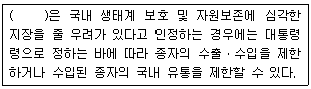
- 농림축산식품부장관
- 농촌진흥청장
- 국립종자원장
- 환경부장관
(정답률: 63%)
87. 종자관련법상 “꽃 또는 볏과식물의 소수(spikelet)를 엽맥에 끼우는 퇴화한 잎 또는 인편상의 구조물”을 설명하는 용어는?
- 악판
- 강모
- 부리
- 포엽
(정답률: 60%)
88. 종자관련법상 대통령령으로 정하는 작물이 아닌 것은?
- 화훼
- 뽕
- 양송이
- 임목(林木)
(정답률: 47%)
89. 종자관련법상 분포장 종자의 보증표시를 옳게 나타낸 것은?
- 포장한 보증종자의 포장을 뜯거나 열었을 때, 종자의 보증 효력을 잃은 것으로 본다. 다만, 해당 종자를 보증한 보증기관이나 종자관리사의 감독에 따라 분포장(分包裝)하는 경우도 포함한다는 단서에 따라 분포장한 종자의 보증표시는 분포장 하기 전에 표시되었던 해당 품종의 보증표시와 다른 내용으로 하여야 한다.
- 포장한 보증종자의 포장을 뜯거나 열었을 때, 종자의 보증 효력을 잃은 것으로 본다. 다만, 해당 종자를 보증한 보증기관이나 농촌진흥청장의 감독에 따라 분포장(分包裝)하는 경우도 포함한다는 단서에 따라 분포장한 종자의 보증표시는 분포장 하기 전에 표시되었던 해당 품종의 보증표시와 같은 내용으로 하여야 한다.
- 포장한 보증종자의 포장을 뜯거나 열었을 때, 종자의 보증 효력을 잃은 것으로 본다. 다만, 농촌진흥청장이나 종자관리사의 감독에 따라 분포장(分包裝)하는 경우도 포함한다는 단서에 따라 분포장한 종자의 보증표시는 분포장 하기 전에 표시되었던 해당 품종의 보증표시보다 더 자세한 내용으로 하여야 한다.
- 포장한 보증종자의 포장을 뜯거나 열었을 때, 종자의 보증 효력을 잃은 것으로 본다. 다만, 해당 종자를 보증한 보증기관이나 종자관리사의 감독에 따라 분포장(分包裝)하는 경우는 제외한다는 단서에 따라 분포장한 종자의 보증표시는 분포장 하기 전에 표시되었던 해당 품종의 보증표시와 같은 내용으로 하여야 한다.
(정답률: 57%)
90. 종자관련법상 유통 종자의 품질표시 사항으로 맞은 것은? (문제 오류로 실제 시험에서는 3, 4번이 정답처리 되었습니다. 여기서는 3번을 누르면 정답 처리 됩니다.)
- 품종의 순도
- 품종의 진위
- 포장연월
- 재배 시 특히 주의할 사항
(정답률: 73%)
91. 식물신품종보호관련법상 품종보호권을 침해한 자가 받는 벌칙은?
- 3년 이하의 징역 또는 1000만원 이하의 벌금에 처한다.
- 5년 이하의 징역 또는 1000만원 이하의 벌금에 처한다.
- 5년 이하의 징역 또는 1억 이하의 벌금에 처한다.
- 7년 이하의 징역 또는 1억 이하의 벌금에 처한다.
(정답률: 79%)
92. 종자관련법상 종자업의 등록 내용으로 옳지 않은 것은?
- 종자업을 하려는 자는 종자관리사를 1명 이상 두어야 한다. 다만, 대통령령으로 정하는 작물의 종자를 생산∙판매하려는 자의 경우에는 그러하지 아니하다.
- 종자업을 하려는 자는 종자관리사를 2명 이상 두어야 한다. 다만, 대통령령으로 정하는 작물의 종자를 생산∙판매하려는 자의 경우에는 그러하지 아니하다.
- 종자업을 하려는 자는 대통령령으로 정하는 시설을 갖추어 시장에게 등록하여야 한다.
- 종자업을 하려는 자는 대통령령으로 정하는 시설을 갖추어 군수에게 등록하여야 한다.
(정답률: 72%)
93. 식물신품종보호관련법상 품종보호권의 효력이 적용되는 것은?
- 영리 외의 목적으로 자가소비(自家消費)를 하기위한 품졸
- 실험이나 연구를 하기 위한 품종
- 다른 품종을 육성하기 위한 품종
- 보호품종을 반복하여 사용하여야 종자생산이 가능한 품종
(정답률: 60%)
94. 다음 중 ( )에 알맞은 내용은?
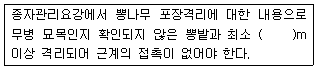
- 1
- 3
- 5
- 10
(정답률: 53%)
95. 종자관련법상 ( )에 해당하는 것은?
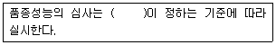
- 산림청장
- 농촌진흥청장
- 농업기술실용화재단장
- 농업기술센터장
(정답률: 41%)
96. 종자관련법상 보상 청구의 내용이다. ( )에 알맞은 내용은?
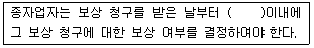
- 5일
- 15일
- 25일
- 30일
(정답률: 46%)
97. 다음은 식물신풍종보호관련법상 통상실시권에 대한 내용이다. ( )에 알맞은 내용은?
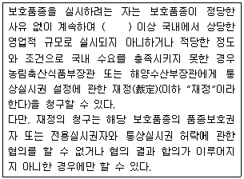
- 3년
- 2년
- 1년
- 6개월
(정답률: 38%)
98. 종자관련법상 자체보증의 대상에 대한 내용이다. ( )에 해당하지 않은 것은?
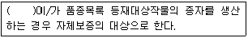
- 종자업자
- 농업단체
- 실험실 연구원
- 시장
(정답률: 59%)
99. 식물신품종보호관련법상 품종보호를 위해 출원시 첨부하지 않아도 되는 것은?
- 품종보호 출원 수수료 납부증명서
- 종자시료
- 품종 육성지역의 토양 상태
- 품종의 사진
(정답률: 72%)
100. 종자관리요강상 벼의 포장검사 및 종자검사에 있어 특정병에 해당하는 것은?
- 도열병
- 선충심고병
- 깨씨무늬병
- 흰잎마름병
(정답률: 70%)